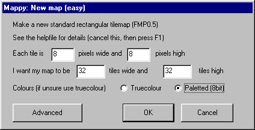
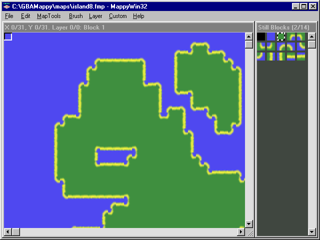
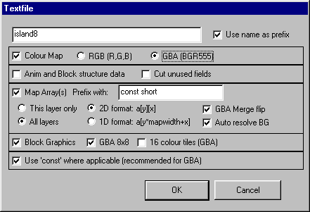
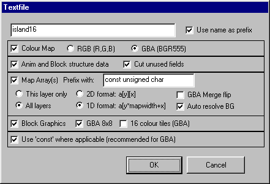
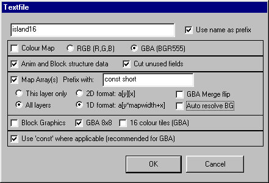
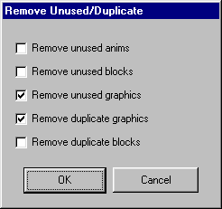
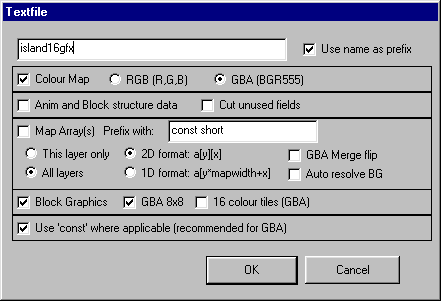
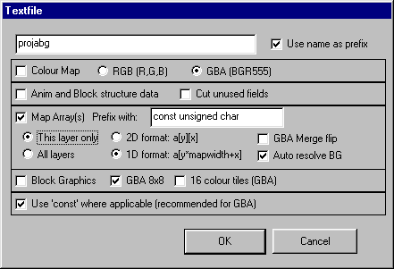
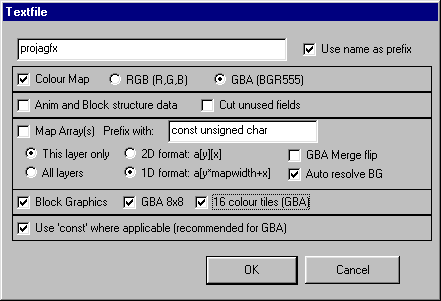

GBAMappy - Release 2 documentation
Four small GBA projects showing how to export maps and graphics from MappyWin32 for GBA. All the original maps are in the maps folder, the source graphics are in the graphics folder. You need MappyWin32 V1.4 or later to follow the map making parts. Projects can be compiled with DevKitAdvance using the go.bat file in each folder, although a precompiled .bin files are provided.
Project 1: Island 8
To demonstrate a simple map with 8x8 flipped tiles
In the island8 folder is a tiny source file to load a small map exported from island8.fmp. If you want to make the map from scratch, this is how. Load MappyWin32, and enable 'Flipped Tiles Mode' in the MapTools menu. Choose File:New Map 'Easy'. Fill out these values:

Choose File:Import (Ctrl+i) and load GBAMappy/graphics/tiles8x8.bmp. Choose either Zoom x2 or Zoom x4 from the MapTools menu. Now select the first 'beach block' (still blocks 3/6)), copy it and paste three times (Ctrl+c, ctrl+v, ctrl+v, ctrl+v), select the next beach block (still blocks 7/9)) and do the same, and the next one (11/12) once, finally copy the last beach block (13/13) once. Now to flip the tiles, double click block 3/18 (the first beach block), and follow this sequence of actions (the 'next block' button is the one to the left of 'OK'):
click 'next block', click 'Flip Horizontal',
click 'next block', click 'Flip Vertical',
click 'next block', click 'Flip Horizontal' AND click 'Flip Vertical',
click 'next block',
click 'next block', click 'Flip Horizontal',
click 'next block', click 'Flip Vertical',
click 'next block', click 'Flip Horizontal' AND click 'Flip Vertical',
click 'next block',
click 'next block', click 'Flip Horizontal',
click 'next block',
click 'next block', click 'Flip Vertical',
If you did it correctly, your blocks should look like this (but no map yet :):

To make a map like the one above choose the blue block (1/14) and press 'f' with the mouse over the map area. Select the green block (2/14) and make some large areas by drawing in the map window. Select 'Autofringe' from the Custom menu. Save the map (as a .FMP) when you have finished.
To export the map to use in a GBA project, choose 'Export as text' from the file menu, and choose these options:

Now have a look at island8.txt to see the map data, and island8.c to see how it is used. You can run the island8.bin in a GBA emulator.
Project 2: Island 16
To demonstrate a simple map with 16x16 flipped tiles, Block Properties, and GBA 64x64 mode
The map for this (island16.fmp) is made in the same way as island8, but with 16x16 pixel tiles. The data is then exported like this:

The difference between this and island8 is that the Block Properties are exported, this means the map array will indicate a block rather than a graphic tile. The 1D option is chosen, this saves a small amount of space over 2D. 'GBA Merge Flip' is unchecked as this info is stored in the block properties, this allows you to use 'unsigned char' (8bit values) to save a little space with less than 256 tiles. Look at the files island16.txt and island16.c for more info. If you want a better, more efficient way of doing this, keep reading for island16b...
Project 3: Island 16b
To demonstrate a simple map with 16x16 flipped tiles using a lookup table, Block Properties, and GBA 64x64 mode
Uses the same map (island16.fmp) as the previous project. The data is then exported the same as island 16 above, but uncheck the colourmap, 'Auto resolve BG', and block graphics like this:

There were two problems with the first island16 example, first the flipped tiles required a little extra code (the 'SetTile' function), and second, duplicate 8x8 tiles within the graphics couldn't be removed. Both these are easily solved with a lookup table. With the island16.fmp map loaded, ensure 'Flipped tiles mode' is on in the MapTools menu and choose MapTools:Useful Functions:Convert 16x16 blocks to 8x8 (GBA), then choose 'Remove Unused or Duplicate' from the same menu. Select these options only:

When done, check Map Properties to see the new number of graphics, with island16 you reduce number of tiles from 28 to 19, 9 8x8 tiles! Now export as text with these settings (graphics and cmap):

Finally, generate the lookup table, choose 'Export GBA 16x16 table' from the Custom menu, and save as 'island16look.txt'. You do not need to keep this 8x8 version of the map. To see how to use the lookup table, look at island16b.c and the much smaller SetTile function.
Project 4: ProjAGBA
To demonstrate more advanced techniques with 16x16 flipped tiles, a long (8000 pixel tall) map, 16 colour tiles, plus a 16x16 tile lookup table
This uses my Amiga ProjA.fmp file, not designed for GBA, but works ok. If you are making a map using this method, use 16x16 8bit tiles, any size map.
When you have your map ready, export with these options:

You can export all layers, and the block properties if you want. I can use 'unsigned char' as layer 0/1 of proja.fmp only goes up to 140 tiles. I then changed to layer 1/1, chose Layers:Adjust -140 (to move the values under 255, starting at 1, this is compensated for in projamain.c) and exported that with the same options as layer 0, but with the prefix projafg.
Now to get all the unique 8x8 graphic blocks choose MapTools:Useful Functions:Convert 16x16 blocks to 8x8 (GBA). Have a look at Map Properties now, there are 1164 blocks now (from 291) too many for the 1024 GBA limit. Ensure 'Flipped tiles mode' is on in the MapTools menu, and choose 'Remove Unused or Duplicate' from the same menu. Select these options only:
When done, check Map Properties to see the new number of graphics (814 for proja). Any flipped graphics have been removed too. Now export the colourmap and graphics to projagfx like this:

The final thing is to generate the lookup table, choose 'Export GBA 16x16 table' from the Custom menu, and save as 'projalook.txt'. This maps the 16x16 arrays you exported earlier to the 8x8 tiles with flip information. Tip: You could modify the 'Export GBA 16x16 table.lua' script to merge the palette number for 16 colour tiles. You can now discard this 8x8 map, any changes would be done to the original 16x16 map.
Just to tidy up, layer 0 has some wasted space, so I cut the lower half (all zeroes) in Wordpad, and halved the size, also I reduced the cmap to 16 colours in projagfx.txt (just saves space). To see how these four text files are used, look at projamain.c.
Using MappyWin32 as a GBA sprite converter
You can create sprite graphics data for GBA by making an 8x8 8bit map, importing your sprites picture, and exporting the graphics as text, choose 1D for the sprite data in your GBA programme and copy the data like the tile graphics bu to the sprite memory.
DevKitAdvance is from http://devkitadv.sourceforge.net/
gba.h taken from http://www.L8Night.co.uk/mwynn/gbadev/
GBAMappy and MappyWin32 by Robin Burrows (http://www.tilemap.co.uk).